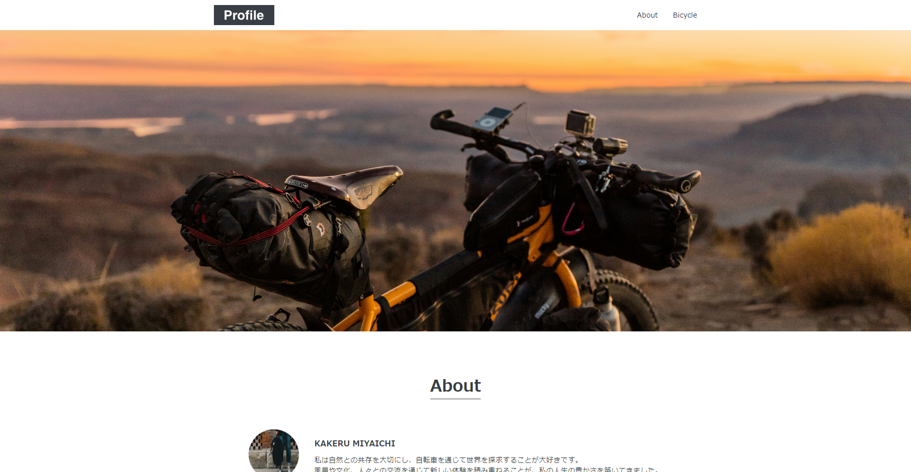

1.Profile / プロフィールサイト
シンプルなので苦労した点はあまりなかったですが、しいて挙げるとすれば構造が始めたばかりなので苦労したと思います。
Codejump：入門
体感難易度：★☆☆☆☆
Codejumpにあるサンプルを模写しました
各レベルに複数のサイトが練習としてありますがその中から異なるレイアウトのものを2種ずつ模写しています。
私の技術レベルを参考にしていただければと思います。
シンプルなので苦労した点はあまりなかったですが、しいて挙げるとすれば構造が始めたばかりなので苦労したと思います。
Codejump：入門
体感難易度：★☆☆☆☆
これが中級なの？！と発狂した記憶しかないのですが、自サイトですが個人のこじんまりしたページでは企業用ページのようなアニメーションを扱わなかったので、とにかくCSSでアニメーションとjQureyを扱うのが苦労でした。
アニメーションがバグったり、ずれたり散々な記憶だけが残っていていいことが言えない悲しさです。
Codejump：中級
体感難易度：★★★★★★★
カテゴリに分けられるほどのものではないものをまとめています。
ステップ・キャンプ3か月間の集大成。
仮想のお客さんの要望を聞き、サンプルを作り、足りないものやあったらいいだろうと感じる機能をこちらから提案・実装するというところまでを少人数で共同開発。
私はサンプル図の作成、顧客情報を検索し表示する部分を担当しました。
商品管理部門のエラーの原因探しにも参加。無事に発見。
VBA：応用
体感難易度：★★★★☆
約1ヵ月に渡る企業のインターンシップの課題。
Pythonと外部ライブラリを用いた画像認識による特定のものを物体検出。
結果は振るわずでしたが、良い経験ができたと思います。感謝！
Python：企業レベル開発
体感難易度：★★★★★★★★

Miu Kotani
東京都在住。8月生まれの影響か、性格はだいたいネコと言われます。
2歳からパソコンはゲームがメインでしたが切っても切り離せない相棒。パソコンで出来ることであれば、3DCG、絵を描く、プログラミング何でもしてみます。
Progateにある言語はすべてコンプリート。
主に使う言語はPython3で他はHTML/CSSも少々。苦手なのはJavaやon Rails、jQueryあたり。
Windows、Mac、Linux（Mint）のどれも一応は使えますが、コマンドラインはあまり得意ではないです。
趣味はゲーム、歌う事とギターの練習頑張り中。
Contact：Wantedly
| 言語 | 期間（だいたい） | 目安レベル |
|---|---|---|
| HTML5 | 1年程度 | ★★☆☆☆ |
| CSS2~3 | 1年程度 | ★★☆☆☆ |
| Sass | 3日 | ★☆☆☆☆ |
| javascript ES6 | 1ヶ月 | ★☆☆☆☆ |
| jQuery | 3週程度 | ☆☆☆☆☆ |
| SQL | 1ヶ月 | ★☆☆☆☆ |
| PHP | 1ヶ月 | ☆☆☆☆☆ |
| Ruby / on rails | 1ヶ月 | ☆☆☆☆☆ |
| Go | 1週間 | ★☆☆☆☆ |
| Python | 3ヶ月 | ★☆☆☆☆ |
| Java | 1ヶ月 | ☆☆☆☆☆ |
| C | 1ヵ月 | ★☆☆☆☆ |
| VBA | 3ヶ月 | ★☆☆☆☆ |
| ツール名 | 期間 | レベル |
|---|---|---|
| PhotoShopEL7 | 数年は触っていたはず | ★★☆☆☆ |
| Blender3.x~4.x | 2～3ヶ月ぐらい | ★☆☆☆☆ |
| Git | 1ヶ月 | ★☆☆☆☆ |
| 資格名 | 種類 |
|---|---|
| Microsoft Office Specialist | Excel 2019 Expert |
| レベル | 説明 |
|---|---|
| ★★★★★ | 問題なく使用できる |
| ★★★★☆ | 少し不安な面はあるが使用できる |
| ★★★☆☆ | 凝ったり難しいことはできないが使える |
| ★★☆☆☆ | 基本的な操作はできる |
| ★☆☆☆☆ | とりあえず扱える |
| ☆☆☆☆☆ | うまくできていない |